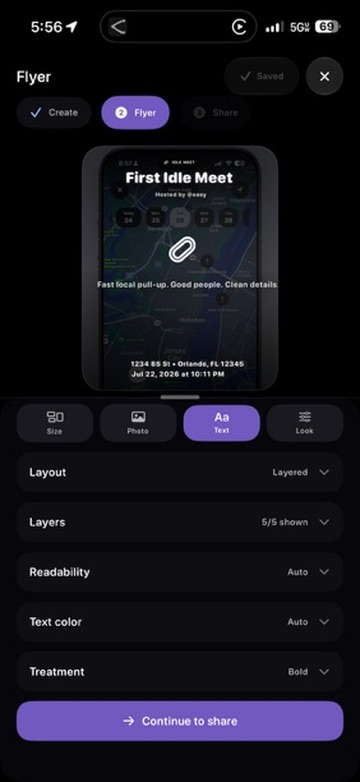

Idle Guides
Useful before the next drive.
Open the guide for the job in front of you. Plan the meet, check the car, sort the route, or understand the part before money and momentum make the decision harder.
Start here: car meets12 min read
How to host a car meet without losing the spot
Get permission, work out the usable capacity, plan the arrivals and exit, publish the rules, and leave the property cleaner than you found it.
Open the host runbook Build the parking plan
Meets
Plan the lot, the people, and the way out.
For hosts and attendees who want the location to work again next month.
- How to host a car meetPermission, capacity, weather, staffing, updates, and cleanup. 12 min
- Plan car meet parkingEntrances, usable spaces, pedestrians, overflow, and the full-lot call. 11 min
- Car meet etiquetteProperty, cars, photos, conversations, vendors, and the road outside. 8 min
- When a meet gets shut downConfirm the instruction, clear the lot, and deal with questions afterward. 8 min
Cars & maintenance
Measure, inspect, and keep the receipts.
For decisions that need the exact car, exact part, and a little less guessing.
- Pre-meet project car checklistRecent work, cold checks, tires, controls, and a short shakedown. 9 min
- Wheel fitment explainedWidth, offset, tire size, brake clearance, mounting details, and rubbing. 12 min
- Buying a used modified carPaperwork, system checks, an independent inspection, and the real first-year cost. 12 min
- Calculate an ethanol blendUse the fuel already in the tank, the actual source blend, and a supported target. 10 min
- Check if a modification is street legalResearch federal, state, local, emissions, equipment, warranty, and insurance questions. 12 min
Driving & track
Know the plan before the energy changes.
For group drives, roadside problems, pressure, track days, and controlled testing.
- Plan a group car cruiseShared routes, legal regroup points, a lost-car plan, and no pressure to keep up. 10 min
- Handle a breakdown on the wayRoadside safety, exact location, group response, qualified help, and towing. 10 min
- Leave a car meet safelyPedestrians, passengers, fatigue, vehicle changes, and an ordinary drive home. 9 min
- Decline a street-race invitationShort answers, distance, friends who help, and a safe exit when someone persists. 7 min
- Your first track dayOrganizer rules, inspection, flags, passing, paddock checks, and the drive home. 11 min
- Your first dyno tuneMechanical health, fuel, cooling, ignition, drivetrain, goals, and take-home files. 12 min
Community
Make something people can participate in.
For the work around the cars: organizing people and documenting what they brought.
Use Idle with the plan
Keep the details where the group can find them.
Idle can hold meet details, host updates, Parking Plans, ride-outs, Groups, and short-lived Convoys with opt-in location sharing.
The app helps people see the current plan. The host, driver, builder, and local rules still make the real decisions.